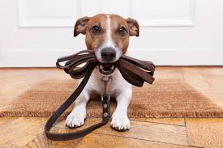
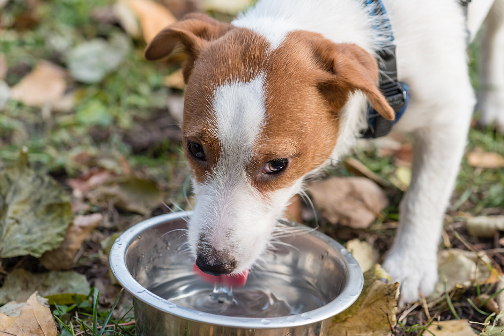
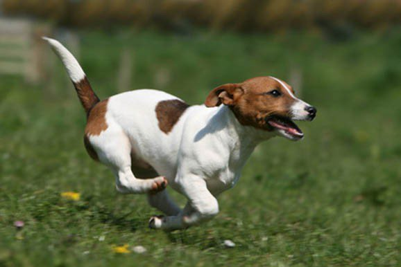

Qu'apporte-t-on en randonnée?

Le site de Mountain Equipment Coop est une ressource incontournable pour planifier une randonnée avec Fido!
- Les produits recommandés par MEC pour l'eau (H2O) et la nourriture:
- Les sacs à excréments de MEC
- La laisse
- Laisses disponibles chez Mondou et chez MEC
- Vendues dans certains refuges (ex. SPCA Montréal)
- La trousse de premiers soins
N'oubliez pas que les vaccins de votre chien doivent être à jour pour le protéger!
Vous êtes maintenant prêts! Amusez-vous!
